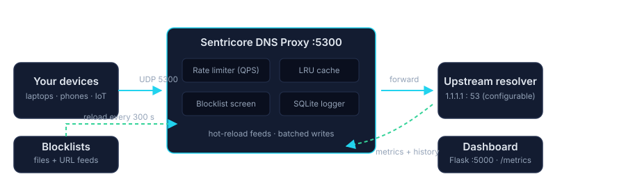
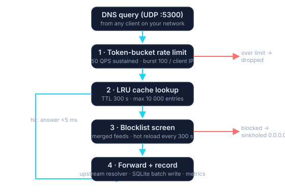

Blocklist enforcement
Local files or URL feeds, merged and hot-reloaded every 5 minutes. Ad-block hosts syntax is normalized automatically — no restarts.
Open source · Self-hosted · Python 3.11+
Sentricore DNS is a security-first DNS proxy that blocks known-bad domains, caches good answers, rate-limits noisy clients, and records every query to SQLite — all in a single lightweight service you can run on a Raspberry Pi or in Docker.
$ dig @127.0.0.1 -p 5300 evil.example
;; ANSWER SECTION:
evil.example. 300 IN A 0.0.0.0 (blocked by Sentricore)
$ dig @127.0.0.1 -p 5300 github.com
;; ANSWER SECTION:
github.com. 300 IN A 20.205.243.166 (cache hit, 1.2 ms)
$ curl -s localhost:5000/metrics | grep sentricore
sentricore_total_queries 128441
sentricore_blocked_queries 3902
sentricore_cache_hits 97220
Six subsystems working together on the DNS path — no agents, no appliances, no cloud dependency.
Local files or URL feeds, merged and hot-reloaded every 5 minutes. Ad-block hosts syntax is normalized automatically — no restarts.
Configurable TTL and max size keep repeat lookups instant and shave load off your upstream resolver.
Token-bucket QPS limits per source IP stop abuse and DNS amplification before it starts.
Every query, block, and cache event lands in SQLite via batched writes — durable history without the I/O tax.
A Flask web dashboard for humans and a native /metrics endpoint for machines. Grafana-ready out of the box.
Add or remove blocked domains over REST, secured with a shared secret. Writes are denied by default without one.

git clone https://github.com/SentriCore/sentricore-dns-proxy.git
cd sentricore-dns-proxy
docker compose up -dStarts the proxy on :5300/udp and the dashboard on :5000.
python -m venv venv && source venv/bin/activate
pip install -r requirements.txt
python run_proxy.py # DNS proxy on :5300
python run_web.py # Dashboard on :5000Point clients at <host>:5300 and open http://127.0.0.1:5000.
curl -fsSL https://raw.githubusercontent.com/SentriCore/sentricore-dns-proxy/main/install.sh | bash
sudo systemctl status sentricore-dns-proxyThe installer registers both systemd services and enables them on boot.
| Sentricore DNS | Public filtered DNS | Hardware appliance | |
|---|---|---|---|
| Data stays on your network | ✔ | ✘ | ✔ |
| Custom blocklists & API control | ✔ | Limited | Vendor UI |
| Full query history & metrics | ✔ SQLite + Prometheus | ✘ | Export tools |
| Cost | Free, open source | Free–$$ | $$$ upfront |
| Runs on hardware you own | Pi, VM, container | — | Vendor only |
Filter ads and malware at the network edge for every device — including the ones without an app.
Keep firmware phoning home to dead addresses while you watch exactly what each gadget tries to resolve.
Rate limiting plus blocklists blunt drive-by malware and DNS amplification before they touch staff laptops.
Clone it, configure it, and block your first malicious domain tonight.